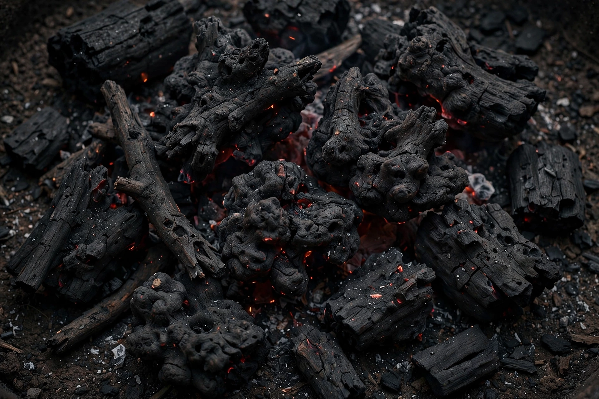

| Charcoal | |
|---|---|
 | |
| Composition | Mostly carbon; some ash and volatiles |
| Production | Pyrolysis of wood in low oxygen |
| Energy density | ~28–33 MJ/kg (roughly twice dry wood) |
| Uses | Fuel, metallurgy, filtration, art, medicine |
Charcoal is a lightweight black carbon residue produced by slowly heating wood or other organic material in the absence of oxygen (pyrolysis), which drives off water and volatile compounds. The result burns hotter, cleaner and longer than raw wood, and has been made since prehistoric times; charcoal fragments are among the residues at ancient hearths, and charcoal drawing is one of the oldest art media.
Traditionally, wood was stacked in earth-covered mounds (clamps) or pits and burned slowly for days under the watch of a charcoal burner (collier), a skilled rural trade. Modern production uses steel kilns and retorts that recover by-products such as wood vinegar, tar and methanol, and yields a more uniform product. Lump charcoal is carbonised wood in its natural shapes; briquettes are moulded from charcoal fines with a starch binder and are the standard barbecue fuel in many countries.
Fuel and industry: charcoal fuelled metalworking from the Bronze Age through the early Industrial Revolution — iron smelting, glassmaking and gunpowder (charcoal is one of gunpowder's three ingredients). It is still used for barbecuing, in some regions' steel industries (notably Brazil's plantation-based charcoal iron), and as a domestic cooking fuel across much of the developing world, with associated deforestation and indoor air-pollution concerns. Activated charcoal, treated to develop a vast internal pore surface, is used in water and air filtration, gas masks, and medicine as an emergency antidote that adsorbs many poisons in the gut. Charcoal is also a pigment (vine and willow charcoal for drawing) and, as biochar, a soil amendment investigated for carbon sequestration. It is frequently made from building material offcuts and forestry residues.
Because charcoal stores carbon in a stable form, biochar burial is studied as a negative-emissions technique; conversely, inefficient earth-kiln production wastes wood and emits methane and smoke. Sustainable production from coppiced wood or waste biomass is promoted in modern standards.
See also: Seawater · Construction · Building material